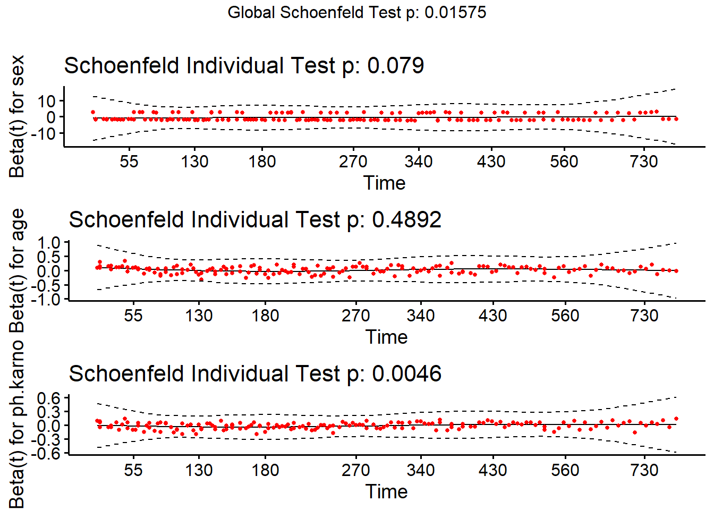

library(survival)
library(survminer)19 R语言生存分析
生存分析是临床常用统计方法，一旦和时间扯上关系，分析就变得复杂多了，此时不再是单一的因变量，还需要考虑时间给因变量和自变量带来的各种影响。
本次主要演示R语言做生存分析的一些方法。比如寿命表、K-M曲线、logrank检验。
本推文不涉及理论，只有实操，想要了解生存分析的理论的请自行学习。不涉及理论，并不代表理论不重要，在以后的机器学习和临床预测模型的相关推文中，会经常用到这些理论，建议大家学习一下。
19.1 生存过程的描述
使用survival包中的lung数据集用于演示，这是一份关于肺癌患者的生存数据。time是生存时间，以天为单位，status是生存状态，1代表删失，2代表死亡。但是一般在生存分析中我们喜欢用1代表死亡，用0代表删失，所以我们更改一下（其实不改也可以，你记住就行）。
df <- lung
df$status <- ifelse(df$status == 2,1,0)
str(df)
## 'data.frame': 228 obs. of 10 variables:
## $ inst : num 3 3 3 5 1 12 7 11 1 7 ...
## $ time : num 306 455 1010 210 883 ...
## $ status : num 1 1 0 1 1 0 1 1 1 1 ...
## $ age : num 74 68 56 57 60 74 68 71 53 61 ...
## $ sex : num 1 1 1 1 1 1 2 2 1 1 ...
## $ ph.ecog : num 1 0 0 1 0 1 2 2 1 2 ...
## $ ph.karno : num 90 90 90 90 100 50 70 60 70 70 ...
## $ pat.karno: num 100 90 90 60 90 80 60 80 80 70 ...
## $ meal.cal : num 1175 1225 NA 1150 NA ...
## $ wt.loss : num NA 15 15 11 0 0 10 1 16 34 ...首先把生存时间和生存状态用Surv()放到一起，可以看到有+的就是截尾数据。
Surv(time = lung$time, event = lung$status)
## [1] 306 455 1010+ 210 883 1022+ 310 361 218 166 170 654
## [13] 728 71 567 144 613 707 61 88 301 81 624 371
## [25] 394 520 574 118 390 12 473 26 533 107 53 122
## [37] 814 965+ 93 731 460 153 433 145 583 95 303 519
## [49] 643 765 735 189 53 246 689 65 5 132 687 345
## [61] 444 223 175 60 163 65 208 821+ 428 230 840+ 305
## [73] 11 132 226 426 705 363 11 176 791 95 196+ 167
## [85] 806+ 284 641 147 740+ 163 655 239 88 245 588+ 30
## [97] 179 310 477 166 559+ 450 364 107 177 156 529+ 11
## [109] 429 351 15 181 283 201 524 13 212 524 288 363
## [121] 442 199 550 54 558 207 92 60 551+ 543+ 293 202
## [133] 353 511+ 267 511+ 371 387 457 337 201 404+ 222 62
## [145] 458+ 356+ 353 163 31 340 229 444+ 315+ 182 156 329
## [157] 364+ 291 179 376+ 384+ 268 292+ 142 413+ 266+ 194 320
## [169] 181 285 301+ 348 197 382+ 303+ 296+ 180 186 145 269+
## [181] 300+ 284+ 350 272+ 292+ 332+ 285 259+ 110 286 270 81
## [193] 131 225+ 269 225+ 243+ 279+ 276+ 135 79 59 240+ 202+
## [205] 235+ 105 224+ 239 237+ 173+ 252+ 221+ 185+ 92+ 13 222+
## [217] 192+ 183 211+ 175+ 197+ 203+ 116 188+ 191+ 105+ 174+ 177+如果只是想要描述一下这份生存数据，可以使用寿命表法或者K-M曲线，在R中可以通过survfit()实现。
# 构建生存曲线
fit <- survfit(Surv(time, status) ~ 1, data = df)
# 寿命表，surv_summary比默认的summary()更好
surv_summary(fit)
## time n.risk n.event n.censor surv std.err upper lower
## 1 5 228 1 0 0.99561404 0.004395615 1.0000000 0.98707342
## 2 11 227 3 0 0.98245614 0.008849904 0.9996460 0.96556190
## 3 12 224 1 0 0.97807018 0.009916654 0.9972662 0.95924368
## 4 13 223 2 0 0.96929825 0.011786516 0.9919508 0.94716300
## 5 15 221 1 0 0.96491228 0.012628921 0.9890941 0.94132171
## 6 26 220 1 0 0.96052632 0.013425540 0.9861367 0.93558107
## 7 30 219 1 0 0.95614035 0.014184183 0.9830945 0.92992527
## 8 31 218 1 0 0.95175439 0.014910735 0.9799794 0.92434234
## 9 53 217 2 0 0.94298246 0.016284897 0.9735659 0.91335978
## 10 54 215 1 0 0.93859649 0.016939076 0.9702809 0.90794671
## 11 59 214 1 0 0.93421053 0.017574720 0.9669508 0.90257880
## 12 60 213 2 0 0.92543860 0.018798180 0.9601711 0.89196244
## 13 61 211 1 0 0.92105263 0.019389168 0.9567281 0.88670745
## 14 62 210 1 0 0.91666667 0.019968077 0.9532533 0.88148430
## 15 65 209 2 0 0.90789474 0.021093908 0.9462168 0.87112471
## 16 71 207 1 0 0.90350877 0.021642644 0.9426590 0.86598451
## 17 79 206 1 0 0.89912281 0.022182963 0.9390770 0.86086855
## 18 81 205 2 0 0.89035088 0.023240987 0.9318456 0.85070391
## 19 88 203 2 0 0.88157895 0.024272607 0.9245323 0.84062118
## 20 92 201 1 1 0.87719298 0.024779731 0.9208475 0.83560803
## 21 93 199 1 0 0.87278498 0.025286647 0.9171308 0.83058337
## 22 95 198 2 0 0.86396897 0.026285933 0.9096467 0.82058489
## 23 105 196 1 1 0.85956096 0.026778995 0.9058807 0.81560966
## 24 107 194 2 0 0.85069951 0.027763443 0.8982733 0.80564534
## 25 110 192 1 0 0.84626878 0.028250266 0.8944478 0.80068492
## 26 116 191 1 0 0.84183806 0.028733836 0.8906085 0.79573831
## 27 118 190 1 0 0.83740733 0.029214392 0.8867559 0.79080503
## 28 122 189 1 0 0.83297660 0.029692160 0.8828904 0.78588462
## 29 131 188 1 0 0.82854588 0.030167350 0.8790125 0.78097668
## 30 132 187 2 0 0.81968442 0.031110783 0.8712208 0.77119665
## 31 135 185 1 0 0.81525370 0.031579392 0.8673077 0.76632386
## 32 142 184 1 0 0.81082297 0.032046159 0.8633836 0.76146212
## 33 144 183 1 0 0.80639224 0.032511243 0.8594487 0.75661112
## 34 145 182 2 0 0.79753079 0.033436970 0.8515479 0.74694024
## 35 147 180 1 0 0.79310006 0.033897900 0.8475824 0.74211984
## 36 153 179 1 0 0.78866934 0.034357720 0.8436072 0.73730913
## 37 156 178 2 0 0.77980788 0.035274546 0.8356287 0.72771592
## 38 163 176 3 0 0.76651570 0.036644539 0.8235936 0.71339353
## 39 166 173 2 0 0.75765425 0.037555674 0.8155273 0.70388809
## 40 167 171 1 0 0.75322352 0.038010898 0.8114818 0.69914771
## 41 170 170 1 0 0.74879280 0.038466026 0.8074284 0.69441536
## 42 173 169 0 1 0.74879280 0.038466026 0.8074284 0.69441536
## 43 174 168 0 1 0.74879280 0.038466026 0.8074284 0.69441536
## 44 175 167 1 1 0.74430901 0.038932090 0.8033269 0.68962694
## 45 176 165 1 0 0.73979804 0.039403839 0.7991969 0.68481391
## 46 177 164 1 1 0.73528708 0.039875693 0.7950587 0.68000904
## 47 179 162 2 0 0.72620946 0.040831745 0.7867159 0.67035655
## 48 180 160 1 0 0.72167065 0.041310284 0.7825326 0.66554231
## 49 181 159 2 0 0.71259304 0.042268879 0.7741425 0.65593716
## 50 182 157 1 0 0.70805423 0.042749126 0.7699360 0.65114603
## 51 183 156 1 0 0.70351542 0.043230132 0.7657221 0.64636237
## 52 185 155 0 1 0.70351542 0.043230132 0.7657221 0.64636237
## 53 186 154 1 0 0.69894713 0.043718251 0.7614780 0.64155115
## 54 188 153 0 1 0.69894713 0.043718251 0.7614780 0.64155115
## 55 189 152 1 0 0.69434880 0.044213739 0.7572033 0.63671178
## 56 191 151 0 1 0.69434880 0.044213739 0.7572033 0.63671178
## 57 192 150 0 1 0.69434880 0.044213739 0.7572033 0.63671178
## 58 194 149 1 0 0.68968874 0.044723618 0.7528734 0.63180684
## 59 196 148 0 1 0.68968874 0.044723618 0.7528734 0.63180684
## 60 197 147 1 1 0.68499698 0.045241530 0.7485112 0.62687218
## 61 199 145 1 0 0.68027286 0.045767770 0.7441162 0.62190715
## 62 201 144 2 0 0.67082463 0.046824116 0.7353020 0.61200115
## 63 202 142 1 1 0.66610051 0.047354439 0.7308831 0.60705997
## 64 203 140 0 1 0.66610051 0.047354439 0.7308831 0.60705997
## 65 207 139 1 0 0.66130842 0.047901723 0.7264037 0.60204649
## 66 208 138 1 0 0.65651633 0.048450680 0.7219163 0.59704112
## 67 210 137 1 0 0.65172424 0.049001423 0.7174208 0.59204373
## 68 211 136 0 1 0.65172424 0.049001423 0.7174208 0.59204373
## 69 212 135 1 0 0.64689665 0.049562270 0.7128898 0.58701260
## 70 218 134 1 0 0.64206907 0.050125134 0.7083507 0.58198951
## 71 221 133 0 1 0.64206907 0.050125134 0.7083507 0.58198951
## 72 222 132 1 1 0.63720491 0.050698710 0.7037752 0.57693155
## 73 223 130 1 0 0.63230333 0.051283424 0.6991623 0.57183791
## 74 224 129 0 1 0.63230333 0.051283424 0.6991623 0.57183791
## 75 225 128 0 2 0.63230333 0.051283424 0.6991623 0.57183791
## 76 226 126 1 0 0.62728505 0.051898763 0.6944504 0.56661573
## 77 229 125 1 0 0.62226677 0.052516642 0.6897296 0.56140253
## 78 230 124 1 0 0.61724849 0.053137208 0.6849999 0.55619818
## 79 235 123 0 1 0.61724849 0.053137208 0.6849999 0.55619818
## 80 237 122 0 1 0.61724849 0.053137208 0.6849999 0.55619818
## 81 239 121 2 0 0.60704604 0.054428498 0.6753847 0.54562217
## 82 240 119 0 1 0.60704604 0.054428498 0.6753847 0.54562217
## 83 243 118 0 1 0.60704604 0.054428498 0.6753847 0.54562217
## 84 245 117 1 0 0.60185761 0.055101203 0.6704957 0.54024596
## 85 246 116 1 0 0.59666918 0.055777281 0.6655969 0.53487943
## 86 252 115 0 1 0.59666918 0.055777281 0.6655969 0.53487943
## 87 259 114 0 1 0.59666918 0.055777281 0.6655969 0.53487943
## 88 266 113 0 1 0.59666918 0.055777281 0.6655969 0.53487943
## 89 267 112 1 0 0.59134178 0.056493740 0.6605811 0.52935986
## 90 268 111 1 0 0.58601437 0.057214008 0.6555547 0.52385081
## 91 269 110 1 1 0.58068697 0.057938291 0.6505179 0.51835217
## 92 270 108 1 0 0.57531024 0.058680326 0.6454326 0.51280626
## 93 272 107 0 1 0.57531024 0.058680326 0.6454326 0.51280626
## 94 276 106 0 1 0.57531024 0.058680326 0.6454326 0.51280626
## 95 279 105 0 1 0.57531024 0.058680326 0.6454326 0.51280626
## 96 283 104 1 0 0.56977841 0.059470446 0.6402172 0.50708954
## 97 284 103 1 1 0.56424658 0.060265393 0.6349901 0.50138454
## 98 285 101 2 0 0.55307338 0.061902647 0.6244165 0.48988160
## 99 286 99 1 0 0.54748678 0.062729652 0.6191120 0.48414791
## 100 288 98 1 0 0.54190018 0.063562614 0.6137958 0.47842592
## 101 291 97 1 0 0.53631358 0.064401818 0.6084680 0.47271553
## 102 292 96 0 2 0.53631358 0.064401818 0.6084680 0.47271553
## 103 293 94 1 0 0.53060812 0.065283876 0.6030365 0.46687880
## 104 296 93 0 1 0.53060812 0.065283876 0.6030365 0.46687880
## 105 300 92 0 1 0.53060812 0.065283876 0.6030365 0.46687880
## 106 301 91 1 1 0.52477726 0.066212421 0.5974962 0.46090869
## 107 303 89 1 1 0.51888089 0.067169680 0.5918922 0.45487570
## 108 305 87 1 0 0.51291674 0.068157318 0.5862225 0.44877769
## 109 306 86 1 0 0.50695259 0.069153590 0.5805384 0.44269407
## 110 310 85 2 0 0.49502429 0.071173772 0.5691277 0.43056952
## 111 315 83 0 1 0.49502429 0.071173772 0.5691277 0.43056952
## 112 320 82 1 0 0.48898741 0.072223700 0.5633452 0.42444435
## 113 329 81 1 0 0.48295053 0.073284268 0.5575481 0.41833381
## 114 332 80 0 1 0.48295053 0.073284268 0.5575481 0.41833381
## 115 337 79 1 0 0.47683723 0.074383257 0.5516775 0.41214973
## 116 340 78 1 0 0.47072393 0.075494166 0.5457918 0.40598083
## 117 345 77 1 0 0.46461064 0.076617562 0.5398911 0.39982704
## 118 348 76 1 0 0.45849734 0.077754031 0.5339753 0.39368826
## 119 350 75 1 0 0.45238404 0.078904180 0.5280446 0.38756443
## 120 351 74 1 0 0.44627074 0.080068634 0.5220991 0.38145549
## 121 353 73 2 0 0.43404415 0.082443090 0.5101637 0.36928207
## 122 356 71 0 1 0.43404415 0.082443090 0.5101637 0.36928207
## 123 361 70 1 0 0.42784352 0.083689321 0.5041055 0.36311858
## 124 363 69 2 0 0.41544226 0.086235271 0.4919424 0.35083836
## 125 364 67 1 1 0.40924162 0.087536643 0.4858376 0.34472158
## 126 371 65 2 0 0.39664957 0.090283246 0.4734305 0.33232098
## 127 376 63 0 1 0.39664957 0.090283246 0.4734305 0.33232098
## 128 382 62 0 1 0.39664957 0.090283246 0.4734305 0.33232098
## 129 384 61 0 1 0.39664957 0.090283246 0.4734305 0.33232098
## 130 387 60 1 0 0.39003875 0.091834363 0.4669574 0.32579034
## 131 390 59 1 0 0.38342792 0.093411868 0.4604644 0.31927978
## 132 394 58 1 0 0.37681710 0.095017143 0.4539514 0.31278928
## 133 404 57 0 1 0.37681710 0.095017143 0.4539514 0.31278928
## 134 413 56 0 1 0.37681710 0.095017143 0.4539514 0.31278928
## 135 426 55 1 0 0.36996588 0.096772712 0.4472339 0.30604732
## 136 428 54 1 0 0.36311466 0.098561472 0.4404935 0.29932852
## 137 429 53 1 0 0.35626344 0.100385300 0.4337299 0.29263289
## 138 433 52 1 0 0.34941222 0.102246185 0.4269433 0.28596045
## 139 442 51 1 0 0.34256100 0.104146240 0.4201335 0.27931128
## 140 444 50 1 1 0.33570978 0.106087711 0.4133006 0.27268545
## 141 450 48 1 0 0.32871582 0.108156668 0.4063345 0.26592397
## 142 455 47 1 0 0.32172187 0.110274202 0.3993431 0.25918807
## 143 457 46 1 0 0.31472792 0.112443281 0.3923261 0.25247790
## 144 458 45 0 1 0.31472792 0.112443281 0.3923261 0.25247790
## 145 460 44 1 0 0.30757501 0.114769476 0.3851616 0.24561738
## 146 473 43 1 0 0.30042210 0.117156914 0.3779689 0.23878538
## 147 477 42 1 0 0.29326919 0.119609626 0.3707476 0.23198214
## 148 511 41 0 2 0.29326919 0.119609626 0.3707476 0.23198214
## 149 519 39 1 0 0.28574947 0.122397820 0.3632207 0.22480203
## 150 520 38 1 0 0.27822975 0.125269565 0.3556585 0.21765764
## 151 524 37 2 0 0.26319030 0.131289244 0.3404266 0.20347744
## 152 529 35 0 1 0.26319030 0.131289244 0.3404266 0.20347744
## 153 533 34 1 0 0.25544941 0.134640748 0.3325916 0.19619977
## 154 543 33 0 1 0.25544941 0.134640748 0.3325916 0.19619977
## 155 550 32 1 0 0.24746662 0.138333639 0.3245387 0.18869779
## 156 551 31 0 1 0.24746662 0.138333639 0.3245387 0.18869779
## 157 558 30 1 0 0.23921773 0.142427599 0.3162481 0.18095008
## 158 559 29 0 1 0.23921773 0.142427599 0.3162481 0.18095008
## 159 567 28 1 0 0.23067424 0.146997865 0.3076975 0.17293157
## 160 574 27 1 0 0.22213075 0.151765851 0.2990832 0.16497774
## 161 583 26 1 0 0.21358726 0.156752465 0.2904045 0.15708959
## 162 588 25 0 1 0.21358726 0.156752465 0.2904045 0.15708959
## 163 613 24 1 0 0.20468779 0.162428228 0.2814175 0.14887877
## 164 624 23 1 0 0.19578832 0.168401942 0.2723521 0.14074818
## 165 641 22 1 0 0.18688885 0.174710378 0.2632068 0.13269961
## 166 643 21 1 0 0.17798938 0.181396440 0.2539797 0.12473524
## 167 654 20 1 0 0.16908991 0.188510603 0.2446686 0.11685766
## 168 655 19 1 0 0.16019044 0.196112784 0.2352708 0.10906995
## 169 687 18 1 0 0.15129097 0.204274810 0.2257834 0.10137573
## 170 689 17 1 0 0.14239151 0.213083712 0.2162028 0.09377928
## 171 705 16 1 0 0.13349204 0.222646211 0.2065248 0.08628565
## 172 707 15 1 0 0.12459257 0.233094916 0.1967446 0.07890080
## 173 728 14 1 0 0.11569310 0.244597108 0.1868568 0.07163182
## 174 731 13 1 0 0.10679363 0.257367445 0.1768548 0.06448724
## 175 735 12 1 0 0.09789416 0.271686878 0.1667313 0.05747732
## 176 740 11 0 1 0.09789416 0.271686878 0.1667313 0.05747732
## 177 765 10 1 0 0.08810474 0.291418720 0.1559751 0.04976720
## 178 791 9 1 0 0.07831533 0.314346559 0.1450170 0.04229358
## 179 806 8 0 1 0.07831533 0.314346559 0.1450170 0.04229358
## 180 814 7 1 0 0.06712742 0.350176075 0.1333431 0.03379322
## 181 821 6 0 1 0.06712742 0.350176075 0.1333431 0.03379322
## 182 840 5 0 1 0.06712742 0.350176075 0.1333431 0.03379322
## 183 883 4 1 0 0.05034557 0.453824434 0.1225342 0.02068546
## 184 965 3 0 1 0.05034557 0.453824434 0.1225342 0.02068546
## 185 1010 2 0 1 0.05034557 0.453824434 0.1225342 0.02068546
## 186 1022 1 0 1 0.05034557 0.453824434 0.1225342 0.02068546画出生存曲线，横坐标是生存时间，纵坐标是生存率。
ggsurvplot(fit,
conf.int = TRUE, # 可信区间
palette= 'blue', # 更改配色
surv.median.line = "hv", # 中位生存时间
ggtheme = theme_bw() # 更改主题
)
19.2 生存过程的比较
如果通过某个变量把数据分为多组，然后检验不同组别之间的生存时间（生存曲线）有无差别，则可以通过logrank检验或者breslow检验。
在R语言中通过survdiff()实现logrank检验。
fit <- survdiff(Surv(time, status) ~ sex, data = df)
fit
## Call:
## survdiff(formula = Surv(time, status) ~ sex, data = df)
##
## N Observed Expected (O-E)^2/E (O-E)^2/V
## sex=1 138 112 91.6 4.55 10.3
## sex=2 90 53 73.4 5.68 10.3
##
## Chisq= 10.3 on 1 degrees of freedom, p= 0.001可以用神包broom提取数据：
broom::tidy(fit)
## # A tibble: 2 × 4
## sex N obs exp
## <chr> <dbl> <dbl> <dbl>
## 1 1 138 112 91.6
## 2 2 90 53 73.4
broom::glance(fit)
## # A tibble: 1 × 3
## statistic df p.value
## <dbl> <dbl> <dbl>
## 1 10.3 1 0.00131对于不同组别之间生存曲线的检验，也可以通过K-M图示的方法：
fit.logrank <- survfit(Surv(time, status) ~ sex, data = df)
# 这一步输出太多，我注释掉了，可以自己运行看看
# surv_summary(fit.logrank) # 可以查看寿命表通过ggsurvplot()进行可视化，非常多的细节可以修改，超级详细的教程可以参考我的另一篇推文：R语言生存曲线的可视化(超详细)
ggsurvplot(fit.logrank,
data = df,
surv.median.line = "hv", # Add medians survival
# Change legends: title & labels
legend.title = "Sex",
legend.labs = c("Male", "Female"),
# Add p-value and tervals
pval = TRUE, # 这里P值直接写数字也行
conf.int = TRUE,
# Add risk table
risk.table = TRUE,
tables.height = 0.2,
tables.theme = theme_cleantable(),
ncensor.plot = TRUE,
# Color palettes. Use custom color: c("#E7B800", "#2E9FDF"),
# or brewer color (e.g.: "Dark2"), or ggsci color (e.g.: "jco")
palette = c("#E7B800", "#2E9FDF"),
ggtheme = theme_bw(), # Change ggplot2 theme
# Change font size, style and color
main = "Survival curve",
font.main = c(16, "bold", "darkblue"),
font.x = c(14, "bold.italic", "red"),
font.y = c(14, "bold.italic", "darkred"),
font.tickslab = c(12, "plain", "darkgreen")
)
## Warning in geom_segment(aes(x = 0, y = max(y2), xend = max(x1), yend = max(y2)), : All aesthetics have length 1, but the data has 2 rows.
## ℹ Please consider using `annotate()` or provide this layer with data containing
## a single row.
## All aesthetics have length 1, but the data has 2 rows.
## ℹ Please consider using `annotate()` or provide this layer with data containing
## a single row.
## All aesthetics have length 1, but the data has 2 rows.
## ℹ Please consider using `annotate()` or provide this layer with data containing
## a single row.
## All aesthetics have length 1, but the data has 2 rows.
## ℹ Please consider using `annotate()` or provide this layer with data containing
## a single row.自带的surv_cutpoint()可用于寻找最佳切点，但是只能用于连续性数据。
使用myeloma数据进行演示。
rm(list = ls())
# 0. Load some data
data(myeloma)
head(myeloma)
## molecular_group chr1q21_status treatment event time CCND1 CRIM1
## GSM50986 Cyclin D-1 3 copies TT2 0 69.24 9908.4 420.9
## GSM50988 Cyclin D-2 2 copies TT2 0 66.43 16698.8 52.0
## GSM50989 MMSET 2 copies TT2 0 66.50 294.5 617.9
## GSM50990 MMSET 3 copies TT2 1 42.67 241.9 11.9
## GSM50991 MAF <NA> TT2 0 65.00 472.6 38.8
## GSM50992 Hyperdiploid 2 copies TT2 0 65.20 664.1 16.9
## DEPDC1 IRF4 TP53 WHSC1
## GSM50986 523.5 16156.5 10.0 261.9
## GSM50988 21.1 16946.2 1056.9 363.8
## GSM50989 192.9 8903.9 1762.8 10042.9
## GSM50990 184.7 11894.7 946.8 4931.0
## GSM50991 212.0 7563.1 361.4 165.0
## GSM50992 341.6 16023.4 2096.3 569.2寻找最佳切点：
# 1. Determine the optimal cutpoint of variables
res.cut <- surv_cutpoint(myeloma, time = "time", event = "event",
variables = c("DEPDC1", "WHSC1", "CRIM1") # 找这3个变量的最佳切点
)
summary(res.cut)
## cutpoint statistic
## DEPDC1 279.8 4.275452
## WHSC1 3205.6 3.361330
## CRIM1 82.3 1.968317查看根据最佳切点进行分组后的数据分布情况：
# 2. Plot cutpoint for DEPDC1
plot(res.cut, "DEPDC1", palette = "npg")
## $DEPDC1根据最佳切点重新划分数据，这样数据就根据最佳切点变成了高表达/低表达组。
# 3. Categorize variables
res.cat <- surv_categorize(res.cut)
head(res.cat)
## time event DEPDC1 WHSC1 CRIM1
## GSM50986 69.24 0 high low high
## GSM50988 66.43 0 low low low
## GSM50989 66.50 0 low high high
## GSM50990 42.67 1 low high low
## GSM50991 65.00 0 low low low
## GSM50992 65.20 0 high low low根据最佳切点绘制生存曲线：
# 4. Fit survival curves and visualize
library("survival")
fit <- survfit(Surv(time, event) ~DEPDC1, data = res.cat)
ggsurvplot(fit, data = res.cat, risk.table = TRUE, conf.int = TRUE)确定最佳切点的R包还有非常多，其他的后续会再介绍。
下次继续介绍Cox回归。
19.3 Cox回归
上次介绍了生存分析中的寿命表、K-M曲线、logrank检验、最佳切点的寻找等，本次主要介绍Cox回归。
本推文不涉及理论，只有实操，想要了解生存分析的理论的请自行学习。
使用survival包中的lung数据集用于演示，这是一份关于肺癌患者的生存数据。time是生存时间，以天为单位，status是生存状态，1代表删失，2代表死亡。
rm(list = ls())
library(survival)
library(survminer)
str(lung)
## 'data.frame': 228 obs. of 10 variables:
## $ inst : num 3 3 3 5 1 12 7 11 1 7 ...
## $ time : num 306 455 1010 210 883 ...
## $ status : num 2 2 1 2 2 1 2 2 2 2 ...
## $ age : num 74 68 56 57 60 74 68 71 53 61 ...
## $ sex : num 1 1 1 1 1 1 2 2 1 1 ...
## $ ph.ecog : num 1 0 0 1 0 1 2 2 1 2 ...
## $ ph.karno : num 90 90 90 90 100 50 70 60 70 70 ...
## $ pat.karno: num 100 90 90 60 90 80 60 80 80 70 ...
## $ meal.cal : num 1175 1225 NA 1150 NA ...
## $ wt.loss : num NA 15 15 11 0 0 10 1 16 34 ...可以使用cox回归探索危险因素。分类变量需要变为因子型，这样在进行回归时会自动进行哑变量设置。
lung$sex <- factor(lung$sex, labels = c("female","male"))
lung$ph.ecog <- factor(lung$ph.ecog, labels = c("asymptomatic", "symptomatic",
'in bed <50%','in bed >50%'))
str(lung)
## 'data.frame': 228 obs. of 10 variables:
## $ inst : num 3 3 3 5 1 12 7 11 1 7 ...
## $ time : num 306 455 1010 210 883 ...
## $ status : num 2 2 1 2 2 1 2 2 2 2 ...
## $ age : num 74 68 56 57 60 74 68 71 53 61 ...
## $ sex : Factor w/ 2 levels "female","male": 1 1 1 1 1 1 2 2 1 1 ...
## $ ph.ecog : Factor w/ 4 levels "asymptomatic",..: 2 1 1 2 1 2 3 3 2 3 ...
## $ ph.karno : num 90 90 90 90 100 50 70 60 70 70 ...
## $ pat.karno: num 100 90 90 60 90 80 60 80 80 70 ...
## $ meal.cal : num 1175 1225 NA 1150 NA ...
## $ wt.loss : num NA 15 15 11 0 0 10 1 16 34 ...拟合多因素Cox回归模型，这里我们只用sex/age两个变量做演示：
fit.cox <- coxph(Surv(time, status) ~ sex + age + ph.karno, data = lung)
# 查看结果
summary(fit.cox)
## Call:
## coxph(formula = Surv(time, status) ~ sex + age + ph.karno, data = lung)
##
## n= 227, number of events= 164
## (1 observation deleted due to missingness)
##
## coef exp(coef) se(coef) z Pr(>|z|)
## sexmale -0.497170 0.608249 0.167713 -2.964 0.00303 **
## age 0.012375 1.012452 0.009405 1.316 0.18821
## ph.karno -0.013322 0.986767 0.005880 -2.266 0.02348 *
## ---
## Signif. codes: 0 '***' 0.001 '**' 0.01 '*' 0.05 '.' 0.1 ' ' 1
##
## exp(coef) exp(-coef) lower .95 upper .95
## sexmale 0.6082 1.6441 0.4378 0.8450
## age 1.0125 0.9877 0.9940 1.0313
## ph.karno 0.9868 1.0134 0.9755 0.9982
##
## Concordance= 0.637 (se = 0.025 )
## Likelihood ratio test= 18.81 on 3 df, p=3e-04
## Wald test = 18.73 on 3 df, p=3e-04
## Score (logrank) test = 19.05 on 3 df, p=3e-04结果解读和logistic回归的结果解读类似：R语言logistic回归的细节解读
coef是回归系数，exp(coef)是HR值，se(coef)是回归系数的标准误，z是Wald检验的z值，Pr(>|z|)是回归系数的P值，lower .95/upper .95是HR值的95%可信区间。
Concordance= 0.645是Cox回归的C-index，最后给出了Likelihood ratio test似然比检验的统计量、自由度、P值；Wald test的统计量、自由度、P值；Score (logrank) test的统计量、自由度、P值。
想获得整洁的结果不需要自己提取，只要用神包broom即可：
broom::tidy(fit.cox, exponentiate = T, conf.int = T)
## # A tibble: 3 × 7
## term estimate std.error statistic p.value conf.low conf.high
## <chr> <dbl> <dbl> <dbl> <dbl> <dbl> <dbl>
## 1 sexmale 0.608 0.168 -2.96 0.00303 0.438 0.845
## 2 age 1.01 0.00940 1.32 0.188 0.994 1.03
## 3 ph.karno 0.987 0.00588 -2.27 0.0235 0.975 0.998estimate：HR值（exp(coef)）std.error：回归系数的标准误（se(coef)）statistic：Wald检验的z值p.value：回归系数的P值conf.low/conf.high：HR的95%的可信区间
构建好Cox回归后，也可以用函数单独提取想要的结果，以下图片展示了可用于提取模型信息的函数，和logistic回归差不多：


进行Cox回归必须要符合等比例风险假设，关于什么是等比例风险假设，可以参考郑老师的这篇文章：生存分析COX回归，小心你的数据不符合应用条件
等比例风险的检验可以通过很多方法进行，比如K-M曲线，一般如果有交叉，那么可能不符合等比例风险假设，还可以通过各种残差分布来检验。
下面是Cox回归的等比例风险假设检验，检验方法是基于Schoenfeld残差：
ftest <- cox.zph(fit.cox)
ftest
## chisq df p
## sex 3.085 1 0.0790
## age 0.478 1 0.4892
## ph.karno 8.017 1 0.0046
## GLOBAL 10.359 3 0.0157可以看到ph.karno的P值是小于0.05的，其实是不满足等比例风险假设的，下一篇推文会说到不符合等比例风险假设时该怎么办。
这种方法是基于Schoenfeld残差，检验结果可以通过图示画出来：
library(survminer)
ggcoxzph(ftest)
可以看到sex和age的回归系数随着时间变化基本没啥变化，稳定在0水平线上，和上面的检验结果一样。
还可以通过以下方式查看残差的变化：
ggcoxdiagnostics(fit.cox, type = "schoenfeld")
## Warning: `gather_()` was deprecated in tidyr 1.2.0.
## ℹ Please use `gather()` instead.
## ℹ The deprecated feature was likely used in the survminer package.
## Please report the issue at <https://github.com/kassambara/survminer/issues>.
这张图反映的也是回归系数随时间的变化趋势，和上面的图意思一样，如果符合比例风险假设，那么结果应该是一条水平线，从图示来看，这3个变量都是有点问题的，但是真实数据往往不可能是完美的，很少有完全符合要求的数据。
除了Schoenfeld残差外，ggcoxdiagnostics()还支持其他类型，比如：“martingale”, “deviance”, “score”,“dfbetas” and “scaledsch”在，只需要在type参数中提供合适的类型即可。
cox回归也是回归分析的一种，可以计算出回归系数和95%的可信区间，因此结果可以通过森林图展示：
# 为了森林图好看点，多选几个变量
fit.cox <- coxph(Surv(time, status) ~ . , data = lung)
ggforest(fit.cox, data = lung,
main = "Hazard ratio",
cpositions = c(0.01, 0.15, 0.35), # 更改前三列的相对位置
fontsize = 0.7,
refLabel = "reference",
noDigits = 2
)
这个结果如果你觉得不好看，或者你还有其他的森林图想做到统一的样式，可以考虑我公众号中介绍的画森林图的方法进行个性化定制:
以上是Cox回归的主要内容，大家有问题可以加群或者评论区留言。
19.4 时间依存协变量的Cox回归和时间依存系数Cox回归
之前分别介绍了生存分析中的寿命表法、K-M曲线、logrank检验，以及Cox回归的构建、可视化以及比例风险检验的内容。
本次主要介绍如果数据不符合PH假设时采取的方法。
关于时依协变量、时依系数的基础知识，大家可以参考这几篇文章：
- survival包的案例介绍：Using Time Dependent Covariates and Time Dependent Coefcients in the Cox Model
- 医咖会：一文详解时依协变量
- 7code：含时依协变量的Cox回归
如果不能满足PH假设，可以考虑使用时依协变量或者时依系数Cox回归，时依协变量和时依系数是两个概念，简单来说就是如果一个协变量本身会随着时间而改变，这种叫时依协变量，如果是协变量的系数随着时间改变，这种叫时依系数。
这里以survival包的veteran数据集为例，演示如何处理此类不符合PH检验的情况。
rm(list = ls())
library(survival)
str(veteran)
## 'data.frame': 137 obs. of 8 variables:
## $ trt : num 1 1 1 1 1 1 1 1 1 1 ...
## $ celltype: Factor w/ 4 levels "squamous","smallcell",..: 1 1 1 1 1 1 1 1 1 1 ...
## $ time : num 72 411 228 126 118 10 82 110 314 100 ...
## $ status : num 1 1 1 1 1 1 1 1 1 0 ...
## $ karno : num 60 70 60 60 70 20 40 80 50 70 ...
## $ diagtime: num 7 5 3 9 11 5 10 29 18 6 ...
## $ age : num 69 64 38 63 65 49 69 68 43 70 ...
## $ prior : num 0 10 0 10 10 0 10 0 0 0 ...这个数据集中的变量解释如下图：

首先构建普通的Cox回归，进行等比例风险假设，这里只选择了trt/prior/karno3个变量，而且trt/prior作为分类变量并没有转换为因子型，因为二分类变量数值型和因子型的结果是一样的，转不转换没啥影响！
fit <- coxph(Surv(time, status) ~ trt + prior + karno, data = veteran)
# 进行PH检验
zp <- cox.zph(fit)
zp
## chisq df p
## trt 0.288 1 0.59125
## prior 2.168 1 0.14087
## karno 12.138 1 0.00049
## GLOBAL 18.073 3 0.00042可以看到变量karno的P值小于0.05，是不满足PH假设的。
通过图形化方法查看PH检验的结果：
#op <- par(mfrow=c(1,3))
#plot(zp)
#par(op)
#ggcoxdiagnostics(fit, type = "schoenfeld")
plot(zp[3])
abline(0,0, col="red") # 0水平线
abline(h=fit$coef[3], col="green", lwd=2, lty=2) 
黑色实线以及两侧的虚线是karno的系数随着时间变化的曲线，绿色虚线是假设karno符合PH检验时的总体估计线，红色实线是参考线。
这张图反映了karno变量的系数随着时间的改变，karno偏离的比较厉害（上面注释掉的代码可以都运行看看其他变量的情况），系数最开始接近-0.05，然后逐渐趋于0，最后又开始趋向-0.05，所以它的系数是一致在随着时间改变的，不符合比例风险假设。
19.4.1 对时间分层
这种情况下一个比较简单的解决方式是对时间使用分层函数。根据上面的图示我们知道karno的系数大概分为3层（3段），可以根据两个拐点进行分层，通过survival中的survSplit()实现。
vet2 <- survSplit(Surv(time, status) ~ ., data= veteran,
cut=c(90, 180), # 两个拐点把时间分为3层（3段）
episode= "tgroup",
id="id")
vet2[1:7, c("id", "tstart", "time", "status", "tgroup", "age", "karno")]
## id tstart time status tgroup age karno
## 1 1 0 72 1 1 69 60
## 2 2 0 90 0 1 64 70
## 3 2 90 180 0 2 64 70
## 4 2 180 411 1 3 64 70
## 5 3 0 90 0 1 38 60
## 6 3 90 180 0 2 38 60
## 7 3 180 228 1 3 38 60结果多了两列：tstart/tgroup。
受试者1（id编号为1）在第72天的时候死了，所以数据和之前一样。受试者2和3（id为2和3）虽然时间在变，但是直到第3层才死去，karno的值没有变化。
重新拟合Cox模型，此时tgroup是分好的层，所以要用strata()，另外karno会随着时间变化，和时间有交互，所以用karno:strata(tgroup)。
# 注意此时Surv()的用法！
fit2 <- coxph(Surv(tstart, time, status) ~ trt + prior + karno:strata(tgroup), data = vet2)
fit2
## Call:
## coxph(formula = Surv(tstart, time, status) ~ trt + prior + karno:strata(tgroup),
## data = vet2)
##
## coef exp(coef) se(coef) z p
## trt -0.011025 0.989035 0.189062 -0.058 0.953
## prior -0.006107 0.993912 0.020355 -0.300 0.764
## karno:strata(tgroup)tgroup=1 -0.048755 0.952414 0.006222 -7.836 4.64e-15
## karno:strata(tgroup)tgroup=2 0.008050 1.008083 0.012823 0.628 0.530
## karno:strata(tgroup)tgroup=3 -0.008349 0.991686 0.014620 -0.571 0.568
##
## Likelihood ratio test=63.04 on 5 df, p=2.857e-12
## n= 225, number of events= 128结果表明karno这个变量只有在tgroup=1（第1层，前3个月）才有意义，后面两层是没有意义的。
再次进行PH检验：
cox.zph(fit2)
## chisq df p
## trt 1.72 1 0.189
## prior 3.81 1 0.051
## karno:strata(tgroup) 3.04 3 0.385
## GLOBAL 8.03 5 0.154这时karno:strata(tgroup)就满足了等比例风险假设。
19.4.2 连续性时依系数变换
除了对时间进行分层外，还有一种解决方法。
上面的图中我们可以看出karno系数随时间变化的曲线明显不是线性的，我们可以通过数据变换把它变成类似线性的，比如取log，这种变换通过tt(time transform)函数实现。
这种方法实际上是通过tt()函数构建了一个时依协变量，但是这样做是为了解决系数随着时间改变的问题（也就是为了解决时依系数的问题）。
fit3 <- coxph(Surv(time, status) ~ trt + prior + karno + tt(karno), # 对karno进行变换
data = veteran,
tt = function(x, t, ...) x * log(t+20) # 具体变换方式
)
fit3
## Call:
## coxph(formula = Surv(time, status) ~ trt + prior + karno + tt(karno),
## data = veteran, tt = function(x, t, ...) x * log(t + 20))
##
## coef exp(coef) se(coef) z p
## trt 0.016478 1.016614 0.190707 0.086 0.93115
## prior -0.009317 0.990726 0.020296 -0.459 0.64619
## karno -0.124662 0.882795 0.028785 -4.331 1.49e-05
## tt(karno) 0.021310 1.021538 0.006607 3.225 0.00126
##
## Likelihood ratio test=53.84 on 4 df, p=5.698e-11
## n= 137, number of events= 128此时karno的时依系数估计为：-0.124662 * log(t + 20)。
在构建时依协变量时，可以选择x * t、x * log(t)、x * log(t + 20)、x * log(t + 200)等等，没有明确的规定，要结合结果和图示进行选择，可以参考冯国双老师的文章：一文详解时依协变量。
我们可以把现在的时依系数估计和经过变换后的的PH检验画在一起，看看变换后的效果：
# 变换后的PH检验
zp <- cox.zph(fit, transform = function(time) log(time + 20))
# 画图
plot(zp[3])
abline(0,0, col="red") # 0水平线
abline(h=fit$coef[3], col="green", lwd=2, lty=2) # 整体估计
abline(coef(fit3)[3:4],lwd=2,lty=3,col="blue") # 现在的估计
可以看到变换后结果好多了（蓝色虚线，和黑色曲线相比较），虽然还是有一点倾斜。
以上是两种处理不满足PH假设的方法，实际还有很多种方法，比较常用的是对时间进行分层，其他方法有机会继续介绍。
19.5 参考资料
- http://www.sthda.com/english/wiki/survival-analysis-basics
- https://www.emilyzabor.com/tutorials/survival_analysis_in_r_tutorial.html
- survival包帮助文档
- https://mp.weixin.qq.com/s/2rwxeaF_M0UnqPi2F9JNxA